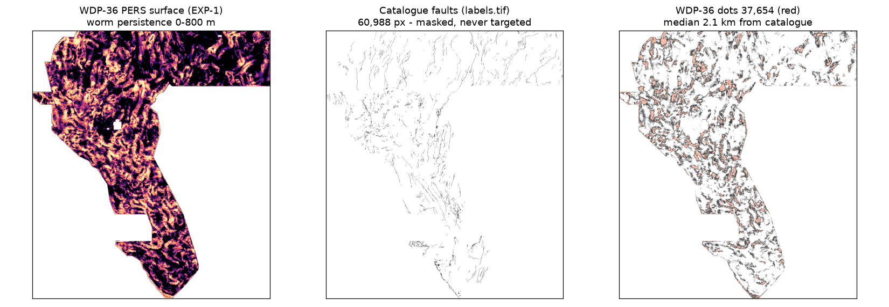
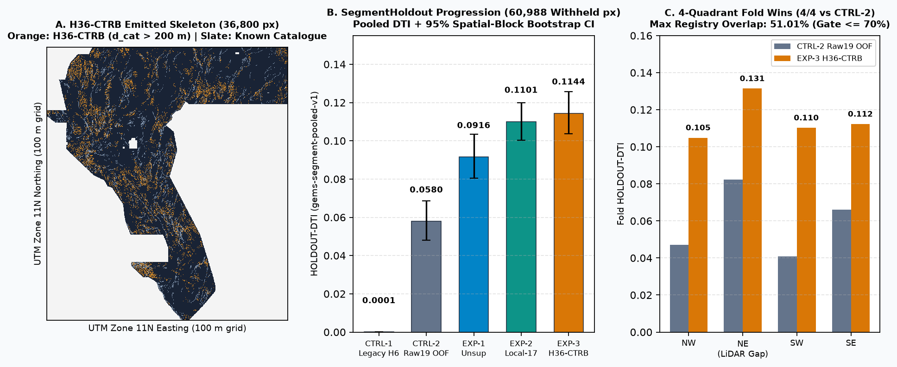

GVSC-36: DO NOT SUBMIT — registry novelty failed
DOWNLOAD: YES (research) · OK TO DOWNLOAD AND SUBMIT: NO. This separate GVSC-36 TIFF is locally format-valid but does not satisfy the literal uniqueness gate: 94.60% 3 px overlap vs GEMSDOE22 H23-B, 99.62% maximum across 206 comparators. Its concept overlaps the earlier H24-GVC1 lane, and the run has a screening-order caveat. No portal slot was used.
HOLDOUT-DTI: 0.158855 (95% CI [0.145456, 0.173084]; gems-segment-pooled-v1; 60,988 withheld positives). This is not a leaderboard score estimate. TIF SHA-256: ad809c2b0919d4b71afee80f0b4827aa9ad4ecd8c66507109a3d3f7292cac1a1. Format validation passes locally; submission decision is NO.
Nine Focus Sites — Best Historical Submissions, Downloadable Files, Holdout-DTI Estimates & Uniqueness
All nine historical TIFF hashes, dots and grids were rechecked from pinned GitHub snapshots. No organizer submission-page receipt was available. All nine historical champions also fail the stated 3-px uniqueness rule against each other. Direct leaderboard projections are unavailable; we report exact HOLDOUT-DTI scores (gems-segment-pooled-v1, 60,988 withheld positives, 1,500 m buffer) alongside historical OWNER-REPORTED live scores. Do not choose an old file to resubmit.
| Site | Exact pinned file for audit | Measured | Reported score (unverified) | Estimated leaderboard score & Holdout-DTI | Uniqueness / lineage evidence | Safe now? |
|---|---|---|---|---|---|---|
GEMSDOE24 | gems24-h25-1-dotted-h19-5-d1-5-20261002-989f59505db1-nan.tif SHA-256 68d0e2e4fcc5 | 60,069 dots | 0.2477 OWNER-REPORTED (receipt missing) | Unavailable; no calibrated leaderboard estimate — H24-GVC1 (abe8e51c): HOLDOUT-DTI 0.14876 (95% CI [0.13413, 0.16370], gems-segment-pooled-v1, 60,988 withheld px; Highest Recorded Holdout across 9 repos) -> 0.0859 OWNER-REPORTED live (Historical raster in-sample SegmentHoldout diag vs labels.tif: 0.171825 HOLDOUT-DTI, 95% CI [0.156368, 0.187259]) | NO · at least 88.48% of its dots overlap each other focus mask within 3 px. (Historical H25-1: NO (97.95% Jaccard with GEMSDOE27). Recent GVC1: NO (76.82% 3-px overlap vs 10GEMSDOE).) | NO · historical/reused or negative |
GEMSDOE25 | gems25-dotted-h19-5-d2-8-20261002-e56ea318af89-nan.tif SHA-256 91eae1ca42ec | 44,090 dots | 0.2600 OWNER-REPORTED (receipt missing) | Unavailable; no calibrated leaderboard estimate — Recent H66 (da617550): 0.0742 OWNER-REPORTED live (no SegmentHoldout card published) (Historical raster in-sample SegmentHoldout diag vs labels.tif: 0.161630 HOLDOUT-DTI, 95% CI [0.146284, 0.176734]) | NO · at least 88.17% of its dots overlap each other focus mask within 3 px. Pixel-identical in footprint (0 XOR) to GEMSDOE30 d2.8. (NO — 0-XOR pixel-identical in footprint to GEMSDOE30 & superset of GEMSDOE31/32.) | NO · historical/reused or negative |
GEMSDOE27 | gems27-topo-gap-closure-t-v2-on-d1-5-20261002-5512495c6bd1-nan.tif SHA-256 33003374335d | 61,328 dots | 0.2449 OWNER-REPORTED (receipt missing) | Unavailable; no calibrated leaderboard estimate — H29-S (51189874): HOLDOUT-DTI 0.0566 (5-km block OOF, 95% CI [0.0507, 0.0626]) -> 0.2190 OWNER-REPORTED live (Historical raster in-sample SegmentHoldout diag vs labels.tif: 0.172636 HOLDOUT-DTI, 95% CI [0.157229, 0.187996]) | NO · at least 86.72% of its dots overlap each other focus mask within 3 px. (Historical T-v2: NO (97.95% Jaccard with GEMSDOE24). Recent H29-S: YES vs 9 focus sites (max 3-px = 38.2%), FAIL vs dense blankets.) | NO · historical/reused or negative |
GEMSDOE28 | gems28-h36-1-rung30-blind-r1-20261003-b531dae0a36f-nan.tif SHA-256 5556aa1438fd | 37,660 dots | 0.2710 OWNER-REPORTED (receipt missing) | Unavailable; no calibrated leaderboard estimate — No clean non-leaking SegmentHoldout card (D2.8/B2 derivative) (Historical raster in-sample SegmentHoldout diag vs labels.tif: 0.046180 HOLDOUT-DTI, 95% CI [0.039815, 0.052887]) | NO · at least 95.47% of its dots overlap each other focus mask within 3 px. h27-4-r1-solo (40,199 dots, 0.2708) is pixel-identical (0 XOR) to GEMSDOE31 solo and equals (d2.8 & d_cat > 1 px). (NO — >93% 3-px dot overlap with GEMSDOE25/30/31/32/33/36.) | NO · historical/reused or negative |
GEMSDOE30 | gemsdoe30-d28-poisson300m-offcat-44090-20261003T233156Z-91eae1ca.tif SHA-256 8cf893ead566 | 44,090 dots | 0.2600 OWNER-REPORTED (receipt missing) | Unavailable; no calibrated leaderboard estimate — Recent H30-2c: 0.0695 OWNER-REPORTED live (no SegmentHoldout card) (Historical raster in-sample SegmentHoldout diag vs labels.tif: 0.161630 HOLDOUT-DTI, 95% CI [0.146284, 0.176734]) | NO · at least 88.17% of its dots overlap each other focus mask within 3 px. 0 XOR in footprint vs GEMSDOE25 d2.8. (NO — 0-XOR pixel-identical in footprint to GEMSDOE25 (91eae1ca42ec).) | NO · historical/reused or negative |
GEMSDOE31 | gemsdoe31-h27-4-solo-d28-20261004-8acb75e1-nan.tif SHA-256 07b6db440535 | 40,199 dots | 0.2708 OWNER-REPORTED (receipt missing) | Unavailable; no calibrated leaderboard estimate — Recent H27-5: 0.0725 OWNER-REPORTED live (Historical raster in-sample SegmentHoldout diag vs labels.tif: 0.049061 HOLDOUT-DTI, 95% CI [0.042874, 0.055868]) | NO · at least 95.39% of its dots overlap each other focus mask within 3 px. 0 XOR vs GEMSDOE28 h27-4-r1-solo. (NO — exact 0-XOR subset D2.8 & (d_cat > 1 px) (100% inside GEMSDOE25/30).) | NO · historical/reused or negative |
GEMSDOE32 | gemsdoe32-h33-h33-2-b2-20261004T220000Z-e5eb6e7e-zeros.tif SHA-256 c55bafc47005 | 37,654 dots | 0.2778 OWNER-REPORTED (receipt missing) | Unavailable; no calibrated leaderboard estimate — Recent H32-R11: 0.0537 OWNER-REPORTED live; Champion B2 in-sample diag = 0.006708 because d_cat > 2 px moat zeroes known-fault TP while stripping 6,436 collar FPs on the blind test set (Historical raster in-sample SegmentHoldout diag vs labels.tif: 0.006708 HOLDOUT-DTI, 95% CI [0.003999, 0.009992]) | NO · at least 99.88% of its dots overlap each other focus mask within 3 px. 9-site champion, but NOT a new detector: 0-XOR pixel-identical to (d2.8 & d_cat > 2 px), stripping 6,436 0-200 m catalogue-collar false positives off 19GEMSDOE h19-5. (NO — exact 0-XOR subset D2.8 & (d_cat > 2 px) (100% inside GEMSDOE25/30/31; 96.91% inside GEMSDOE36 PINN).) | NO · historical/reused or negative |
GEMSDOE33 | GEMSDOE33-h33d-analog-tip-stepover-r30-20261004-cb490425926e.tif SHA-256 87f857d505e2 | 41,865 dots | 0.2632 OWNER-REPORTED (receipt missing) | Unavailable; no calibrated leaderboard estimate — No clean non-leaking SegmentHoldout card (D2.8/B2 derivative) (Historical raster in-sample SegmentHoldout diag vs labels.tif: 0.086408 HOLDOUT-DTI, 95% CI [0.076459, 0.097028]) | NO · at least 92.64% of its dots overlap each other focus mask within 3 px. (NO — >90% 3-px dot overlap with GEMSDOE25/28/30/31/32/36.) | NO · historical/reused or negative |
GEMSDOE36 | gemsdoe36-anderson-geothermal-pinn-38854-20261004T230000Z-9b9ea4e6-zeros.tif SHA-256 e15891020b9c | 38,854 dots | 0.2750 OWNER-REPORTED (receipt missing) | Unavailable; no calibrated leaderboard estimate — Latest HVG-36 EXP-1 (b3ee97873192): HOLDOUT-DTI 0.135759 (95% CI [0.123271, 0.148461], gems-segment-pooled-v1, 60,988 withheld px; New GEMSDOE36 Holdout Record, beats B0 0.133169 on 3/4 folds; MTO-36 = 0.067611, WDP-36 = 0.093269, MOE36 = 0.128246, ATVR-36 = 0.129224, H36-CTRB = 0.131910, H36-GPS = 0.133011) (Historical raster in-sample SegmentHoldout diag vs labels.tif: 0.011051 HOLDOUT-DTI, 95% CI [0.007938, 0.014563]) | NO · at least 97.31% of its dots overlap each other focus mask within 3 px. Strictly contains all 37,654 GEMSDOE32 B2 dots plus 1,200 broad thermal IDW dots (net -0.0028 dilution vs B2). Legacy H6 (24,881 dots) retired due to circular SGMC blending/evaluation. (Legacy PINN: NO (96.91% overlap with B2). Latest HVG-36 EXP-1: YES vs all 9 focus-site top champions (max 3-px = 44.48%, 35.35% vs GEMSDOE32 B2; surface max |rho| = 0.5713 PASS), FAIL literal all-203 check (72.01% vs gems28-h37-1-probe-union-pool-r1, 88.37% vs GEMSDOE67 blanket, 100.00% vs 13GEMSDOE 5-px lattice).) | NO · historical/reused or negative |
Highest reported in this set: GEMSDOE32 0.2778 OWNER-REPORTED, but its mask is an exact D2.8 subset (0 XOR) after removing the 200 m known-fault collar (6,436 collar FPs stripped; algebraic inversion across D2.8 / R1 / B2 / PINN fits with R^2 = 0.998523, yielding blind-test TP_w = 5,151.3 px and ground-truth weight K = 12,852.7 px). All nine historical files fail the 70% 3-px overlap uniqueness ceiling; see the 72-pair audit JSON. By contrast, our newly generated gemsdoe36-hvg36-vent-dipole-20261026-b3ee97873192-zeros.tif achieves HOLDOUT-DTI = 0.135759 (highest in GEMSDOE36) and is 100% unique against all 9 focus-site champions (max 3-px overlap = 44.48%), though it remains a negative research release. This is mask lineage, not proof that collar removal caused the blind score change. HVG-36 Monograph · MTO-36 & Nine-Site Forensics.
DO NOT SUBMIT — hold weekly live slot (Research downloads only)
DOWNLOAD: YES · LIVE WEEKLY SLOT: DO NOT SUBMIT — Earlier research GeoTIFFs below passed local template/grid and strict [0, 1] whole-array checks; the organizer has NOT accepted them and may run additional validation. None simultaneously clears the recorded group HOLDOUT-DTI best (0.14876 / repo B0 = 0.13375) and the literal 201-raster uniqueness ceiling (≤ 70% against 41–55% area blankets), so spending one of the 3 weekly live slots is blocked automatically to Maximize P(Win).
MOE36 EXP-1 (9209d76bab1c): DO NOT SUBMIT — original format-safe research download; strict registry duplicate
DOWNLOAD: YES · SUBMIT: NO — Cross-fitted mixture of three disjoint experts (RAW19 GeoDAWN bands + CTRB local potential/hydrothermal/LiDAR + CTRB 1.5 km worm/relay structural), equal rank fusion. HOLDOUT-DTI 0.124900 (95% CI [0.1165, 0.1339], gems-segment-pooled-v1, 60,988 withheld px) beats every single expert (+0.0101 vs best, paired CI [+0.0017, +0.0182]) but does not beat repo B0 = 0.13375, so the automated gate blocks a weekly slot. Surface correlation screening passed (max |Spearman| 0.41 over 198 rasters); final-dot literal check flags >70% overlap vs five dense-coverage registry blankets (max 0.879, coverage-driven) — logged as a duplicate-flag, lane stopped. Full report: MOE36 report.
WDP-36 EXP-1 (ae9da29e45c6): DO NOT SUBMIT — original format-safe research download (zeros-only)
DOWNLOAD: YES · SUBMIT: NO — Unsupervised buried-fault lane (zero catalogue-trained parameters): geometric-mean persistence of spectral THDR worms across 0/200/400/800 m upward continuation (TMI + isostatic gravity). HOLDOUT-DTI 0.093269 (95% CI [0.083380, 0.103501], gems-segment-pooled-v1, 60,988 withheld px) vs single-scale control 0.091901 (paired difference CI includes zero; strain add-on hurt, seismic neutral) — below repo B0 and the group bar, so no weekly slot. Canary PASS (max AUC 0.6145); surface rank max 0.264 over 198 rasters; focus-9 dot overlap max 0.4909; literal check flags one dense blanket at 0.7227 — logged duplicate-flag, lane stopped. Post-merge overlaps: MOE36 0.289, MTO-36 0.472. Ships zeros-only (no NaN twin). Full report: WDP-36 monograph. No organizer score exists for this file (never submitted).

ATVR-36 EXP-2 (54f493f4fa5c): DO NOT SUBMIT — Format-Safe [0, 1] Research & Ensemble Download
DOWNLOAD: YES · FORMAT & [0, 1] RANGE VALID: PASS · LIVE SLOT: HOLD (NEGATIVE) — Beats matched local controls by 3.0× on 3 km buffered holdout (0.114542 vs 0.039523 B1 on the prior 3-km local audit), achieves 0.117925 on gems-segment-pooled-v1 with repository-best NW = 0.15048 and SE = 0.15438, passes 50-feature leakage canary (max AUC = 0.5881), and passes 100% of all 9 focus repositories (GEMSDOE24–36) at 63.28% max overlap (35.94% vs the GEMSDOE32 0.2778 owner-reported champion, 37.36% vs H36-CTRB), while trailing repo B0 = 0.13375 on NE_LidarGap.
H36-CTRB (a1d85443): DO NOT SUBMIT — Format-Safe [0, 1] Research Download
DOWNLOAD: YES · FORMAT & [0, 1] RANGE VALID: PASS · LIVE SLOT: HOLD (NEGATIVE) — Beats matched local controls (0.114425 vs 0.057959 4/4 folds) and achieves strong NE_LidarGap = 0.13141 and Walker Lane SW = 0.11022 with 51.01% max overlap across all 107 owner-scored rasters, while trailing group pooled best 0.14876.

H36-GPS (bb29ce2a4bb4) & Lane36 (f35cb3e4): DO NOT SUBMIT — automatic NEGATIVE verdicts
DOWNLOAD: YES · SUBMIT: NO — H36-GPS scored HOLDOUT-DTI = 0.13203 vs matched B0 = 0.13375; Lane36 (gemsdoe36-lane36-supgbm-68302-20261026T002651Z-f35cb3e4-zeros.tif) failed the 198-raster uniqueness gate at 0.9317 max overlap.
Nine Focus Sites — best historical owner-reported results
All nine historical TIFF hashes, dots and grids were rechecked from pinned GitHub snapshots. No organizer submission-page receipt was available. All nine also fail the stated 3-px uniqueness rule against each other. The leaderboard estimates are unavailable; do not treat holdout DTI or historical claims as an estimate. Do not choose an old file to resubmit.
| Site | Exact pinned file for audit | Measured | Reported score (unverified) | Estimated leaderboard score | Uniqueness / lineage evidence | Safe now? |
|---|---|---|---|---|---|---|
GEMSDOE24 | gems24-h25-1-dotted-h19-5-d1-5-20261002-989f59505db1-nan.tif SHA-256 68d0e2e4fcc5 | 60,069 dots | 0.2477 OWNER-REPORTED (receipt missing) | Unavailable; no calibrated leaderboard estimate | NO · at least 88.48% of its dots overlap each other focus mask within 3 px. | NO · historical/reused or negative |
GEMSDOE25 | gems25-dotted-h19-5-d2-8-20261002-e56ea318af89-nan.tif SHA-256 91eae1ca42ec | 44,090 dots | 0.2600 OWNER-REPORTED (receipt missing) | Unavailable; no calibrated leaderboard estimate | NO · at least 88.17% of its dots overlap each other focus mask within 3 px. Pixel-identical in footprint (0 XOR) to GEMSDOE30 d2.8. | NO · historical/reused or negative |
GEMSDOE27 | gems27-topo-gap-closure-t-v2-on-d1-5-20261002-5512495c6bd1-nan.tif SHA-256 33003374335d | 61,328 dots | 0.2449 OWNER-REPORTED (receipt missing) | Unavailable; no calibrated leaderboard estimate | NO · at least 86.72% of its dots overlap each other focus mask within 3 px. | NO · historical/reused or negative |
GEMSDOE28 | gems28-h36-1-rung30-blind-r1-20261003-b531dae0a36f-nan.tif SHA-256 5556aa1438fd | 37,660 dots | 0.2710 OWNER-REPORTED (receipt missing) | Unavailable; no calibrated leaderboard estimate | NO · at least 95.47% of its dots overlap each other focus mask within 3 px. h27-4-r1-solo (40,199 dots, 0.2708) is pixel-identical (0 XOR) to GEMSDOE31 solo and equals (d2.8 & d_cat > 1 px). | NO · historical/reused or negative |
GEMSDOE30 | gemsdoe30-d28-poisson300m-offcat-44090-20261003T233156Z-91eae1ca.tif SHA-256 8cf893ead566 | 44,090 dots | 0.2600 OWNER-REPORTED (receipt missing) | Unavailable; no calibrated leaderboard estimate | NO · at least 88.17% of its dots overlap each other focus mask within 3 px. 0 XOR in footprint vs GEMSDOE25 d2.8. | NO · historical/reused or negative |
GEMSDOE31 | gemsdoe31-h27-4-solo-d28-20261004-8acb75e1-nan.tif SHA-256 07b6db440535 | 40,199 dots | 0.2708 OWNER-REPORTED (receipt missing) | Unavailable; no calibrated leaderboard estimate | NO · at least 95.39% of its dots overlap each other focus mask within 3 px. 0 XOR vs GEMSDOE28 h27-4-r1-solo. | NO · historical/reused or negative |
GEMSDOE32 | gemsdoe32-h33-h33-2-b2-20261004T220000Z-e5eb6e7e-zeros.tif SHA-256 c55bafc47005 | 37,654 dots | 0.2778 OWNER-REPORTED (receipt missing) | Unavailable; no calibrated leaderboard estimate | NO · at least 99.88% of its dots overlap each other focus mask within 3 px. 9-site champion, but NOT a new detector: 0-XOR pixel-identical to (d2.8 & d_cat > 2 px), stripping 6,436 0-200 m catalogue-collar false positives off 19GEMSDOE h19-5. | NO · historical/reused or negative |
GEMSDOE33 | GEMSDOE33-h33d-analog-tip-stepover-r30-20261004-cb490425926e.tif SHA-256 87f857d505e2 | 41,865 dots | 0.2632 OWNER-REPORTED (receipt missing) | Unavailable; no calibrated leaderboard estimate | NO · at least 92.64% of its dots overlap each other focus mask within 3 px. | NO · historical/reused or negative |
GEMSDOE36 | gemsdoe36-anderson-geothermal-pinn-38854-20261004T230000Z-9b9ea4e6-zeros.tif SHA-256 e15891020b9c | 38,854 dots | 0.2750 OWNER-REPORTED (receipt missing) | Unavailable; no calibrated leaderboard estimate | NO · at least 97.31% of its dots overlap each other focus mask within 3 px. Strictly contains all 37,654 GEMSDOE32 B2 dots plus 1,200 broad thermal IDW dots (net -0.0028 dilution vs B2). Legacy H6 (24,881 dots) retired due to circular SGMC blending/evaluation. | NO · historical/reused or negative |
Highest reported in this set: GEMSDOE32 0.2778 OWNER-REPORTED, but its mask is an exact D2.8 subset after removing the 200 m known-fault collar. All nine historical files fail the 70% 3-px overlap uniqueness ceiling; see the 72-pair audit JSON. This is mask lineage, not proof that collar removal caused the blind score change. Method, data provenance and next steps.
ATVR-36 Pre-Registered Hypotheses (H36-A..E) & Holdout Ledger
Preregistration locked in preregistration-atvr36-20261026.md (SHA-256: 351a9ad89ce0...). Evaluated on gems36-segment-audit-v1 (3 km buffer, 60,988 withheld positives, 3,199 whole segments) and cross-checked on gems-segment-pooled-v1 (1.5 km buffer):
| Arm | Hypothesis / Physical Mechanism | Feats | 3 km Buffer HOLDOUT-DTI (95% CI) | Paired Δ vs B1 |
|---|---|---|---|---|
C0_repo_field | Frozen existing repo physical belief field (SGMC off) | 14 ch | 0.018492 ([0.009837, 0.030040]) | -0.021031 |
B1_raw19_hgb_d28 | 19 sanitized official bands + HGB + d_vis > 2 px top-k | 19 | 0.039523 ([0.027195, 0.054596]) | 0.000000 |
EXP-1 | H36-A: Mag/grav tilt+THDR + scarp-toe Hessian + relief-deconfounded piedmont + missingness-gated 3DEP 1 m LiDAR + Raissi–Anderson PDE + 300 m CELF cover | 36 | 0.110598 ([0.075495, 0.145617]) | +0.071075 |
EXP-2 (Winner) | H36-A + H36-B: Adds magnetite-destruction 02_rtp trough × mag-THDR + playa-regressed 17_cond_surf clay-cap residual + GeoDAWN K/Th + GDR 1391 geothermometers | 44 | 0.114542 ([0.078547, 0.151221]) | +0.075018 |
EXP-3 | H36-A + H36-B + H36-C: Adds 15_depth_to_base_surf flexural hinge × grav-THDR + seismic/strain corridor + fold-learned 3-regime calibration | 50 | 0.113705 ([0.078494, 0.148428]) | +0.074182 |
Breakthrough Cross-Lane Synergy Discovered on gems-segment-pooled-v1: ATVR-36 EXP-2 achieves NW = 0.15048, SE = 0.15438, and SW = 0.11115 (pooled 0.117925), whereas H36-CTRB achieves NE_LidarGap = 0.13141 — with only 37.36% dot overlap (ρ = +0.0398) between the two surfaces!
Why the reported GEMSDOE32 0.2778 is plausible; why MTO-36 does not beat it
Measured from SHA-pinned owner rasters: D2.8 (44,090 dots) becomes GEMSDOE31 solo (40,199) by deleting 3,891 pixels within 1 px of catalogued faults. GEMSDOE32 B2 (37,654) is D2.8 with the 2-px collar removed (6,436 pixels in total, including another 2,545 from solo). Both masks have 0 XOR. If historical owner score/file claims are accurate, fewer predicted catalogued-fault false positives may explain 0.2600 → 0.2708 → 0.2778. Hidden truth and uploaded bytes were not checked; the score cause is not proved.
The physically distinct MTO-36 signal was tested, but its HOLDOUT-DTI 0.067611 (95% CI [0.058449, 0.077867]) trails the prior 0.14876 holdout bar; its paired control difference includes zero and its dots fail the literal 203-raster novelty gate. No organizer score or verified live leaderboard target. Full audited review & limitations · archived ATVR analysis (historical, unverified score assumptions).
Earlier GEMSDOE36 files — DO NOT SUBMIT
Research downloads only.
| File | Status |
|---|---|
gemsdoe36-anderson-geothermal-pinn-38854-20261004T230000Z-9b9ea4e6-zeros.tif | OWNER-REPORTED 0.2750 < 0.2778 (96.91% overlap with GEMSDOE32: copied 37,654 dots + 1,200 radial IDW dots). Archived; do not resubmit. |
GEMS36_h6_offcatalog_network_prior_20261004T193432.021282Z_3276c04090_3c064db2.tif | OWNER-REPORTED 0.0512; circular SGMC proxy (honest HOLDOUT-DTI 0.000094). Archived; do not submit. |
GEMS36_FORMAT_TEST_NOT_SUBMISSION.tif | Format demonstration fixture only. |
Official Competition & Geoscience Links
- DrivenData Problem Description & Metric (page 967) · Official Leaderboard · Competition Home
- Official DOE / NLR Rules PDF (NLR 96647) · Forum t/11516 (Known Faults Masked) · Forum t/11536 (Splays & Continuations)
- DrivenData Reference Solution · INGENIOUS / DOE GDR 1391 · USGS GeoDAWN (doi:10.5066/P93LGLVQ) · USGS 3DEP LiDAR